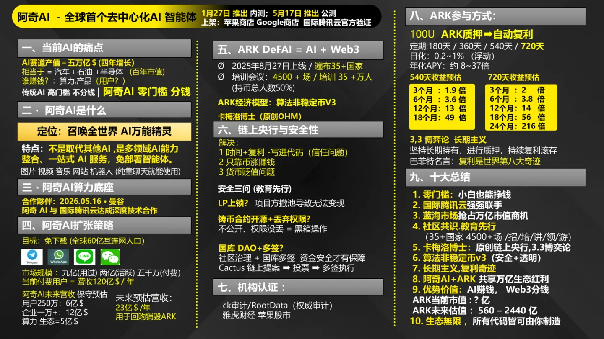

阿奇 AI 能做什么
讲师现场演示过的真实场景。别人问「这 AI 有啥用」，打开这一页。
阿奇 AI 到底能干什么 —— 全部是讲师现场演示过的真实场景。
别人问「这 AI 有啥用」，打开这一页给他看。
一、它跟别的 AI 最根本的不同
「你先问别的 AI 一个问题——『你能帮我做个网站吗？』
你试试看，它多半给你一段代码，你自己搞去吧。
但阿奇不一样——它直接给你做出来。
这就是最大的差别：别的 AI 给你答案，阿奇给你结果。」
「市面上的（AI）只会给你答案，但是它却没有办法帮你执行到位。但今天我们的阿奇 AI 不仅仅给你答案，同时还会把你交代的任务给执行完成。」——9/22 晚间 AMA
「不相信的，等一下课程结束，亲自拿起豆包问他：你可不可以帮我做网站？」——9/27 晚间 AMA
| 层级 | 是什么 | 代表 | 分到蛋糕？ |
|---|---|---|---|
| 第一层 | 算力层 | 腾讯云、阿里云、英伟达 | 吃最大一口 |
| 第二层 | 模型层 | 豆包、DeepSeek、元宝、千问 | 吃第二口 |
| 第三层 | 用户层 | 就是普通人 | 一分都没有 |
→ 价值从下往上流转，但利润分配从来没有从上往下回过。
→ 「今天不是 AI 不能赚钱，而是我们根本不在赚钱的那一层。」
「传统 AI 是员工，阿奇 AI 是老板 —— 老板可以指挥所有员工，员工越聪明老板越开心。」——陈三老师，9/29 专场3
「阿奇 AI 的定位是：召唤全世界 AI 的万能精灵。不是取代其他 AI，而是整合全世界 AI 能力。」——AM-028 官方课件
「传统 AI 让专业人士更强；阿奇 AI 要让普通人也拥有接近专业团队的 AI 产出能力。」——AM-028
二、它具体能做什么（都有人做过）
「我给你数几个我自己用过的：
做网站——你给它一个同行网站的链接，说『做个同款的』，它几分钟就做出来。
写歌——你把一个人的故事讲给它，它给你写出一首完整的歌。
做图做视频——你说要什么样的，它直接给你生成。
写文案——餐厅菜单、产品介绍、宣传语，一句话的事。
做客服机器人——把你的资料喂给它，它就变成一个能回答所有问题的客服。
做交易所、发代币——对，连这个都能做。
你不用懂代码、不用学提示词，会说人话就行。」
「我让阿奇帮我画了一个设计的图纸……你告诉阿奇给我一个 3D 建模，让我能够直接交付给设计师的图纸。」——9/22 晚间 AMA
「刚刚我 12 点 45 分，让他帮我做了一个理发店的网站，几分钟就帮我做好了。」——9/26 午课
「帮助我们做网站、做交易所、发代币，统统都可以，并且不需要额外的成本。」——9/26 午课
三、一个真实的成交案例（做客服机器人）
「我跟你讲个真事。
有个同行在讲课，一口气讲了 20 分钟。等他讲完，我把他的课程内容整理出来，喂给阿奇，做了个客服机器人。
然后我问他：『你们项目缺不缺客服？』
他随手指了几个问题去问那个机器人——全部答上来了，一个不落。
他当场就愣住了。因为这个机器人，比他自己的客服还清楚他的项目。
这就是阿奇能做到的事。」
「他在讲课框框一顿输出，20 分钟左右，你的机器人做好了。我说兄弟，我把你的机器人做好了，你们项目缺不缺客服？不是我去做客服，是我们 ARKIE AI 做的机器人怎么你的客服。他惊呆了——因为你把它讲过的课程内容的问题收集起来，去问这个你创建的客服，它一无一时全回答了出来。」——9/28 场3
四、为什么这对你重要（做生意的人最懂）
「你想想——
以前你要做个网站，找外包，几千块，等一星期。
以前你要做宣传物料，找设计，几百块，等两天。
现在你一句话，几分钟出结果。而且不用花钱。
对做生意的来说，这不是省钱的问题，是能接多少活的问题。」
「可能要 7 天到 10 天的时间，而且还要付费，不下于 5000 块钱去付费。结果用我们的阿奇，十分钟不要就搞定了。」——9/24 午课
五、智能体能干什么（实测数据）
| 案例 | 指令 | 耗时 |
|---|---|---|
| 旅游网站 | "帮我做一个旅游景点网站，要有高德地图一键导航，还有智能回复机器人" | 6 分钟（14:17 → 14:23） |
| BTC 持仓网站 | "帮我写一个比特币排名前 50 的地址全部列出来，我要看它现在有多少资产" | 2 分钟（14:34 → 14:36） |
其他能力：生成图片（一句话）、生成视频（照片→跳舞，1 分钟）、生成音乐（10 字歌词自动谱曲）
两个实测案例（旅游网站 6 分钟 / BTC 网站 2 分钟）——凯森老师，9/29 专场2（现场实操演示）
「只有我们想不到的，没有它做不到的。」——凯森老师，9/29 专场2
真实变现案例：家人用阿奇 AI 做视频，番茄平台赚 16 万；红果短剧赚 6 万多；6 秒视频发微信视频号 69 万播放，两周赚 1500 元 —— 9/29 专场2
六、5 分钟成交法（最实用的一招）
「不管你的客户是做什么的，都可以用这个方法：
第一步 —— 去百度找一家他同行业里比较大的公司官网；
第二步 —— 把链接发给阿奇 AI，说『帮我做个同款的，再加一个线上问答功能』；
第三步 —— 十几分钟做出成品，直接给客户看。
客户看到的是他熟悉的东西 + 他想要的功能，他就懂了。
你不用跟他讲区块链、讲代币，讲了他也听不懂。你把他行业里最值钱的那套东西，十几分钟做出来给他看 —— 他就服了。」
| 客户 | 做了什么 | 耗时 | 结果 |
|---|---|---|---|
| 苹果经销商 | 苹果销售网站（主流机型全含 + 线上客服） | 10 分钟 | 成交 |
| 记者 | 同款「搜狐传媒」网页，手机端实时同步新闻 | 5 分钟 | 1 小时成交一张黑卡 |
「只要一讲别人就加入 —— 什么东西都没讲，就讲了这个 AI，就成交了。」
5 分钟成交法 + 苹果经销商 / 记者两个案例 —— QQ 老师（月链社区），9/27 夜聊
「你不用看我有 8 块腹肌，我精准针对你的客户，完成最有效的肌肉展示，并且解决他的实际问题。」—— QQ 老师，9/27 夜聊
为什么这一招有效（关键）：
「传统老板，你跟他讲区块链、讲代币、讲看不见摸不着的东西，他理都不会理你。
但你把阿奇 AI 做出一个网站帮他引流获客，让他看到实实在在的东西 —— 这样比讲代币、讲 ARK 好成交得多。」
「传统老板听不懂代币，但看得懂网站。」—— 凯森老师，9/29 专场2
七、1.0 → 2.0 → 3.0：它怎么长出来的
| 时间 | 版本 | 发生了什么 |
|---|---|---|
| 2024 年 | 立项 | 卡梅罗博士开始筹备阿奇 AI（提前一年考察、准备） |
| 2026 / 1 | 1.0 | 上线（香港大会）。只能回答问题——你问它答 |
| 2026 / 5 | 2.0 | 全球公测（泰国曼谷发布会）。装上「大脑 + 手脚」——能帮你做事 |
| 2026 / 8 | 3.0 宣布 | 吉隆坡会议宣布（规划中，非已实现） |
「1.0 和 2.0 最大的区别是什么？
1.0 的 AI 只能「回答问题」 —— 就像豆包、DeepSeek，你问它答，但它不能帮你做事。
2.0 给 AI 装上了「大脑 + 手脚」 —— 它不仅能思考，还能帮你完成任务：直接做网站、一键发代币。
这就是「会说话的 AI」和「会干活的 AI」的区别。」
1.0 → 2.0 → 3.0 版本演进 —— 凯森老师，9/29 专场2（ARK 国际商学院）
「2024 年卡梅罗博士就开始筹备阿奇 AI，2026 年 8 月才启动 ARK —— 相当于考察好位置才开店。」—— 穆凡老师，9/27 晨间
⚠️ 3.0 为官方规划（吉隆坡会议宣布），尚未上线，对外讲解请注明「规划中」。
八、为什么不是用别的 AI（关键三点）
「有人问：外面 AI 那么多，我为什么非要用阿奇？」
「三个理由，你记住就够了：」
「一、别人只能回答，阿奇能做事。豆包、DeepSeek 你问它答，但不能帮你完成任务。阿奇能直接做网站、做视频、做音乐。」
「二、别人的智能体要自己部署，阿奇是免部署。」
「三、别人那里你永远是消费者，一直付费；阿奇这里你有机会成为股东。」
现场有些说法是「别的 AI 的智能体都下架了，只剩阿奇」—— 这个说法不准确。
事实上豆包、千问、Kimi 等都还有智能体功能。照这个说法讲，客户掏出手机就能当场反驳，反而丢信任。
正确讲法：「别人的智能体要自己部署 —— 要懂代码、买服务器、调 API、天天维护；阿奇是免部署 —— 会说话就能用。这是门槛高低的差别，不是有无的差别。」
三点对比 —— AM-028 官方课件 + 陈三老师 9/29 专场3 + 小海贝老师 9/28 专场4
⚠️ 已按「严谨准则」修订：原话中的「唯一」「通通下架」属绝对化表述，已改为可验证的「门槛」说法。
九、走完这几步，你就能讲（推荐路径）
| # | 做什么 | 为什么 |
|---|---|---|
| 1 | 自己装一个，玩三天 | 没玩过就讲不出「真感受」 |
| 2 | 用「5 分钟成交法」做一张同款网站 | 你自己的作品，比任何话术都有力 |
| 3 | 参加 7 天赋能实战营 | 教百业怎么用 AI 引流，有案例库 |
| 4 | 找 1 个熟客试讲 | 看真实反应，再调整 |
「7 天赋能实战营是干什么的？
专门教各行各业怎么用阿奇做出网站、怎么帮自己引流。
课程里包括：新手五步法、智能体、选行业、百业地图 —— 本地服务、餐饮、微商电商、企业服务、内容创作……百行百业都涵盖。」
7 天赋能课程内容 —— 凯森老师，9/29 专场2
十、核心金句（可直接引用）
| 金句 | 出处 |
|---|---|
| 「如果你还觉得 AI 跟我没关系，那你不只是错过财富，而是错过整个时代。」 | 陈三老师 9/29 专场3 |
| 「AI 不是不赚钱，而是我们根本不在赚钱的那一层。」 | 陈三老师 9/29 专场3 |
| 「传统 AI 是员工，阿奇 AI 是老板 —— 没有哪个老板会去打压自己的员工。」 | 陈三老师 9/29 专场3 |
| 「你不用看我有 8 块腹肌，我精准针对你的客户，完成最有效的肌肉展示。」 | QQ 老师 9/27 夜聊 |
| 「前端帮你销售，后端帮你售后 —— 剩下的都交给我们。」 | QQ 老师 9/27 夜聊 |
| 「传统老板听不懂代币，但看得懂网站。」 | 凯森老师 9/29 专场2 |
| 「1.0 只能回答问题，2.0 给 AI 装上了大脑和手脚。」 | 凯森老师 9/29 专场2 |
主要素材：9/29 专场2（凯森老师 · 全程实操演示）、9/29 专场3（陈三老师 · AI 产业逻辑）、9/27 夜聊（QQ 老师 · 成交实战）、AM-028 官方课件。
所有收益类数字均为讲师分享的案例口径，非收益承诺。
十一、一图看懂阿奇 AI 的定位

一图读懂 阿奇AI + ARK（官方资料）
算力底座、扩张策略、收入结构，一图看全
十二、一次完整的「阿奇能干什么」（1 分钟版）
「我给你看个东西——
我给它一句话，它几分钟就给我做出一个网站。同一个能力，还能写歌、做视频、写文案。
别的 AI 是告诉你怎么做；这个是直接帮你做完。
对做生意的来说，这就是——你以前要花钱找人干的事，现在它免费帮你干。」